论文排版用图。数据与模型保持不变；时间曲线采用明确标注的测试案例，统计图使用全部 32 个测试案例。
全部 11 页 PDF · 下载完整图包 · English figure captions · 完整结果报告
PDF/SVG 为矢量图，PNG 为 600 dpi。预览从 PDF 渲染。下列示例曲线采用测试 ID 80 和种子 42；统计图的误差条为按入口案例重采样得到的 95% 置信区间。
Vector PDF · Editable SVG · 600 dpi PNG
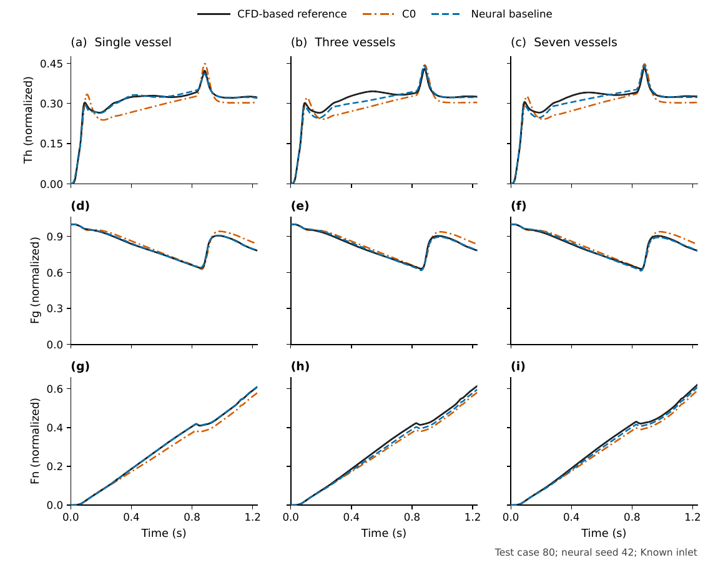
fig01_forward_time. The columns show single-, three- and seven-vessel networks at x = 30 mm in the inlet vessel. Rows show cross-section-averaged Th, Fg and Fn in normalized model units. Black solid curves are the independently generated CFD-based biochemical reference; orange dash-dot curves are fixed C0; blue dashed curves are the neural baseline. Illustrative test case 80 is the first held-out ID, selected without performance ranking. Neural trajectories use seed 42, not a seed-averaged prediction. Every stored 2 ms scoring sample over 0-1.23 s is plotted without smoothing. Axes share the same concentration range within each species row. Both methods receive the prescribed inlet and the same independent mean blood fields. Each topology has its own fixed blood condition and separately trained neural weights.
Vector PDF · Editable SVG · 600 dpi PNG
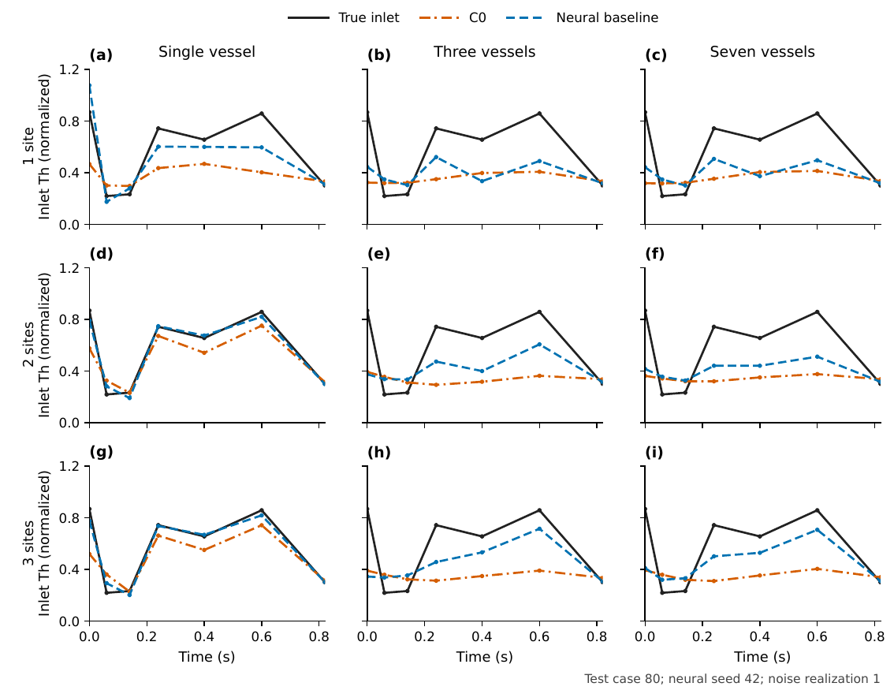
fig02_inlet_recovery. Columns show the single-, three- and seven-vessel networks; rows use one, two and three nested measurement sites. The black curve is the prescribed seven-knot Th inlet. C0 (orange dash-dot) and the neural baseline (blue dashed) infer the same seven amplitudes from paired noisy Th/Fg observations, with noise realization 1 and standard deviation 0.02. Dots indicate parameter knots, not additional observations. All axes use the same limits. Test case 80 is the first held-out ID; the neural curves use seed 42. Only the scored inlet interval 0-0.82 s is shown; the final amplitude is held constant during the remaining concentration simulation to 1.23 s. The temporal inlet is prescribed, not measured from CFD. The additional sites lie at different downstream distances in different topologies, so this is not a controlled vessel-count-only comparison.
Vector PDF · Editable SVG · 600 dpi PNG
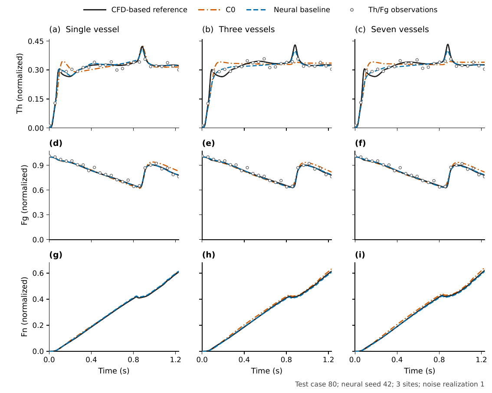
fig03_inverse_time. The columns show single-, three- and seven-vessel networks at x = 30 mm in the inlet vessel. Rows show cross-section-averaged Th, Fg and Fn in normalized model units. Black solid curves are the independently generated CFD-based biochemical reference; orange dash-dot curves are fixed C0; blue dashed curves are the neural baseline. Illustrative test case 80 is the first held-out ID, selected without performance ranking. Neural trajectories use seed 42, not a seed-averaged prediction. Every stored 2 ms scoring sample over 0-1.23 s is plotted without smoothing. Axes share the same concentration range within each species row. Both methods infer seven inlet amplitudes from the same three-site Th/Fg observations with Gaussian noise of absolute standard deviation 0.02 (realization 1). Hollow circles are those observations; Fn is unobserved. Negative noisy Th observations, where present, are retained. Each topology has its own fixed blood condition and separately trained neural weights.
Vector PDF · Editable SVG · 600 dpi PNG
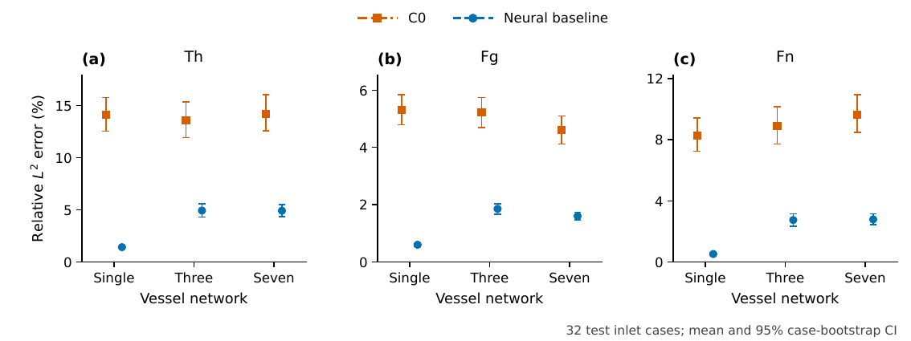
fig04_forward_errors. Known-inlet whole-network errors for Th, Fg and Fn. Symbols are mean relative L2 errors over 32 held-out inlet cases, weighted within each case by reference volume and trapezoidal time weights over 0-1.23 s. Neural errors are averaged across seeds 42, 43 and 44 within each case before averaging cases; this is not the error of an ensemble prediction. Error bars are 95% percentile bootstrap confidence intervals for the case mean (3,000 resamples of the 32 complete inlet cases; RNG seed 52703103). Seeds and time samples are not treated as additional independent cases. The three topologies have different fixed geometries and blood conditions.
Vector PDF · Editable SVG · 600 dpi PNG
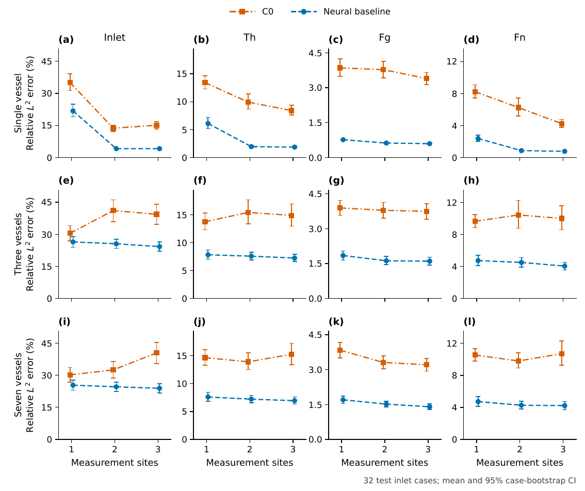
fig05_inverse_errors. Noisy sparse-inverse errors. Rows show single-, three- and seven-vessel networks. Columns show inlet recovery and reconstructed Th, Fg and unobserved Fn. Th/Fg are observed at 24 times using one, two or three nested sites. Noise has absolute standard deviation 0.02. For each inlet case, errors are averaged over the three paired noise realizations and, for the neural baseline, three training seeds; the 32 case means then receive equal weight. Error bars are 95% percentile bootstrap confidence intervals using 3,000 resamples of complete inlet cases. Inlet errors use 0-0.82 s and concentration errors use 0-1.23 s. Each column shares the same vertical limits across the three topologies, with zero included. Small horizontal offsets separate overlapping intervals. Connections between the three discrete site counts only guide the eye. Marginal intervals are descriptive; paired method-difference intervals are supplied in paired-differences.csv.
Vector PDF · Editable SVG · 600 dpi PNG
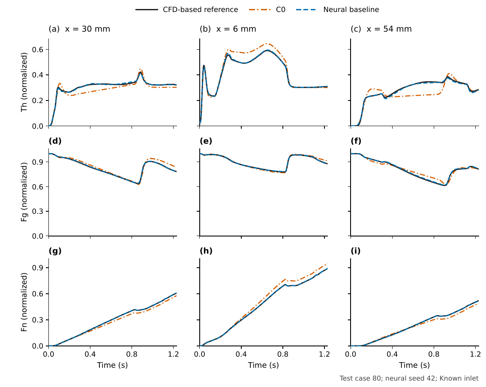
figS1_single_forward. The columns show the three predeclared sampling sites: x = 30 mm; x = 6 mm; x = 54 mm. Vessel labels are one-based in model order. Rows show cross-section-averaged Th, Fg and Fn in normalized model units. Black solid curves are the independently generated CFD-based biochemical reference; orange dash-dot curves are fixed C0; blue dashed curves are the neural baseline. Illustrative test case 80 is the first held-out ID, selected without performance ranking. Neural trajectories use seed 42, not a seed-averaged prediction. Every stored 2 ms scoring sample over 0-1.23 s is plotted without smoothing. Axes share the same concentration range within each species row. Both methods receive the prescribed inlet and the same independent mean blood fields. Each topology has its own fixed blood condition and separately trained neural weights.
Vector PDF · Editable SVG · 600 dpi PNG
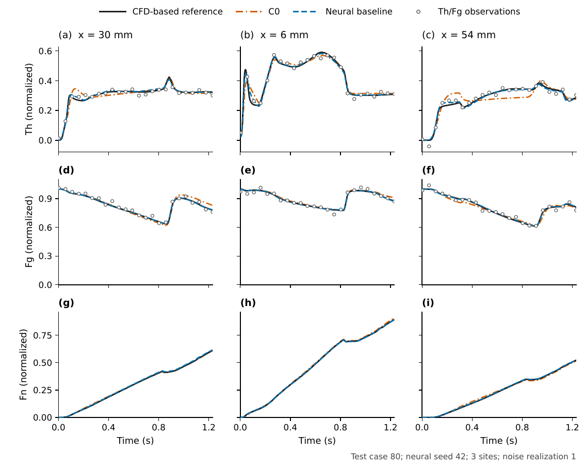
figS2_single_inverse. The columns show the three predeclared sampling sites: x = 30 mm; x = 6 mm; x = 54 mm. Vessel labels are one-based in model order. Rows show cross-section-averaged Th, Fg and Fn in normalized model units. Black solid curves are the independently generated CFD-based biochemical reference; orange dash-dot curves are fixed C0; blue dashed curves are the neural baseline. Illustrative test case 80 is the first held-out ID, selected without performance ranking. Neural trajectories use seed 42, not a seed-averaged prediction. Every stored 2 ms scoring sample over 0-1.23 s is plotted without smoothing. Axes share the same concentration range within each species row. Both methods infer seven inlet amplitudes from the same three-site Th/Fg observations with Gaussian noise of absolute standard deviation 0.02 (realization 1). Hollow circles are those observations; Fn is unobserved. Negative noisy Th observations, where present, are retained. Each topology has its own fixed blood condition and separately trained neural weights.
Vector PDF · Editable SVG · 600 dpi PNG
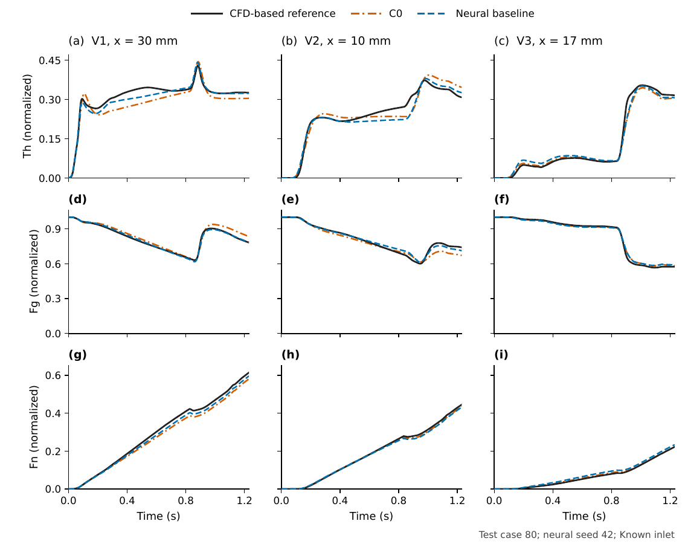
figS3_three_forward. The columns show the three predeclared sampling sites: V1, x = 30 mm; V2, x = 10 mm; V3, x = 17 mm. Vessel labels are one-based in model order. Rows show cross-section-averaged Th, Fg and Fn in normalized model units. Black solid curves are the independently generated CFD-based biochemical reference; orange dash-dot curves are fixed C0; blue dashed curves are the neural baseline. Illustrative test case 80 is the first held-out ID, selected without performance ranking. Neural trajectories use seed 42, not a seed-averaged prediction. Every stored 2 ms scoring sample over 0-1.23 s is plotted without smoothing. Axes share the same concentration range within each species row. Both methods receive the prescribed inlet and the same independent mean blood fields. Each topology has its own fixed blood condition and separately trained neural weights.
Vector PDF · Editable SVG · 600 dpi PNG
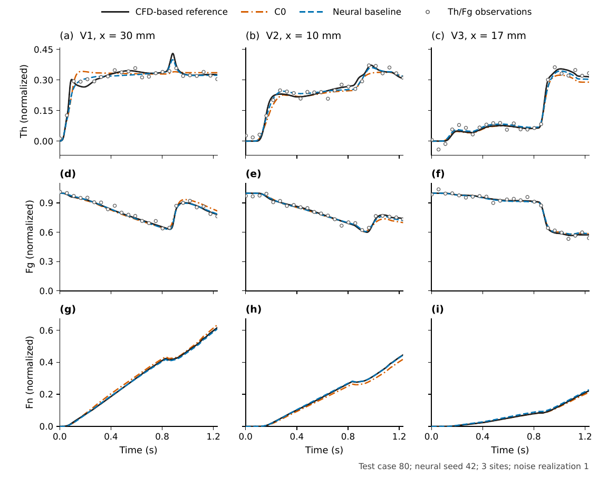
figS4_three_inverse. The columns show the three predeclared sampling sites: V1, x = 30 mm; V2, x = 10 mm; V3, x = 17 mm. Vessel labels are one-based in model order. Rows show cross-section-averaged Th, Fg and Fn in normalized model units. Black solid curves are the independently generated CFD-based biochemical reference; orange dash-dot curves are fixed C0; blue dashed curves are the neural baseline. Illustrative test case 80 is the first held-out ID, selected without performance ranking. Neural trajectories use seed 42, not a seed-averaged prediction. Every stored 2 ms scoring sample over 0-1.23 s is plotted without smoothing. Axes share the same concentration range within each species row. Both methods infer seven inlet amplitudes from the same three-site Th/Fg observations with Gaussian noise of absolute standard deviation 0.02 (realization 1). Hollow circles are those observations; Fn is unobserved. Negative noisy Th observations, where present, are retained. Each topology has its own fixed blood condition and separately trained neural weights.
Vector PDF · Editable SVG · 600 dpi PNG
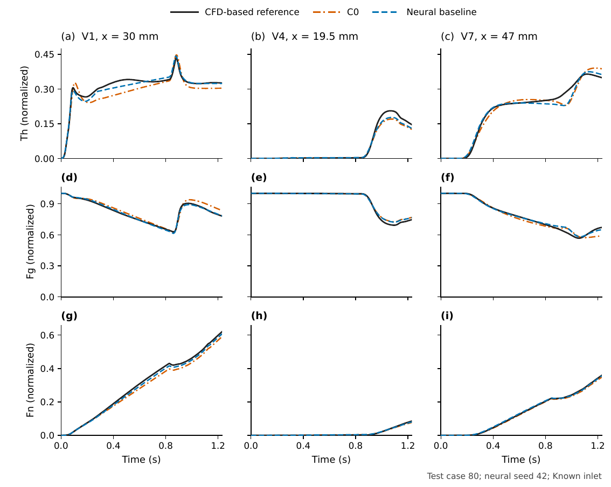
figS5_seven_forward. The columns show the three predeclared sampling sites: V1, x = 30 mm; V4, x = 19.5 mm; V7, x = 47 mm. Vessel labels are one-based in model order. Rows show cross-section-averaged Th, Fg and Fn in normalized model units. Black solid curves are the independently generated CFD-based biochemical reference; orange dash-dot curves are fixed C0; blue dashed curves are the neural baseline. Illustrative test case 80 is the first held-out ID, selected without performance ranking. Neural trajectories use seed 42, not a seed-averaged prediction. Every stored 2 ms scoring sample over 0-1.23 s is plotted without smoothing. Axes share the same concentration range within each species row. Both methods receive the prescribed inlet and the same independent mean blood fields. Each topology has its own fixed blood condition and separately trained neural weights.
Vector PDF · Editable SVG · 600 dpi PNG
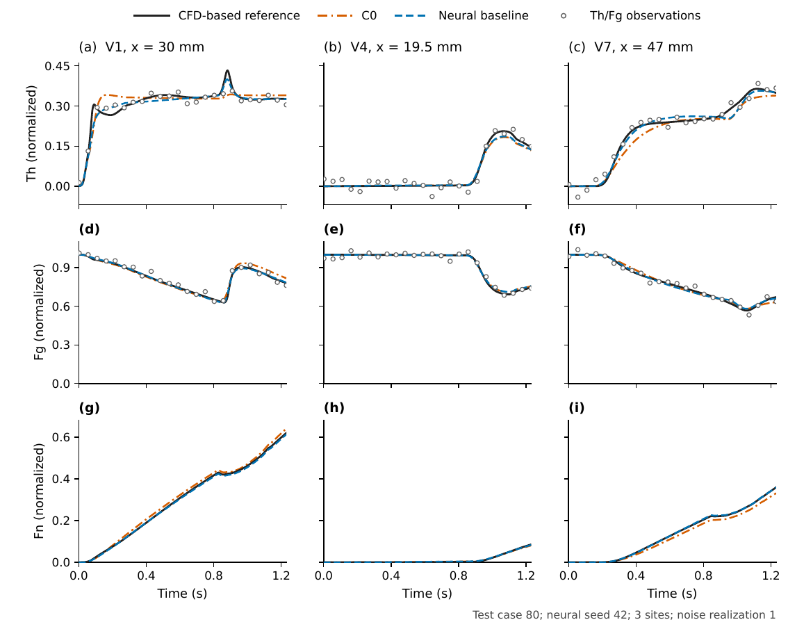
figS6_seven_inverse. The columns show the three predeclared sampling sites: V1, x = 30 mm; V4, x = 19.5 mm; V7, x = 47 mm. Vessel labels are one-based in model order. Rows show cross-section-averaged Th, Fg and Fn in normalized model units. Black solid curves are the independently generated CFD-based biochemical reference; orange dash-dot curves are fixed C0; blue dashed curves are the neural baseline. Illustrative test case 80 is the first held-out ID, selected without performance ranking. Neural trajectories use seed 42, not a seed-averaged prediction. Every stored 2 ms scoring sample over 0-1.23 s is plotted without smoothing. Axes share the same concentration range within each species row. Both methods infer seven inlet amplitudes from the same three-site Th/Fg observations with Gaussian noise of absolute standard deviation 0.02 (realization 1). Hollow circles are those observations; Fn is unobserved. Negative noisy Th observations, where present, are retained. Each topology has its own fixed blood condition and separately trained neural weights.